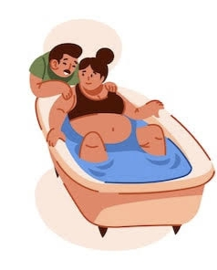

Parto Humanizado
Como funciona
- Respeita o tempo da mulher e do bebê.
- Ambiente acolhedor e com menos intervenções.
- Incentiva o protagonismo da mãe.
Recomendações
- Realizar pré-natal completo.
- Escolher uma equipe de confiança.
- Informar-se sobre seus direitos.